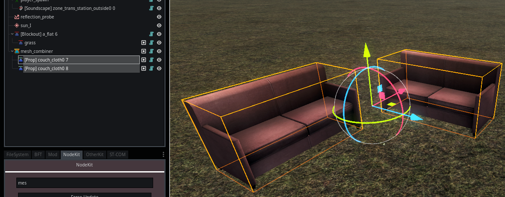

Module: location_mesh_combiner
Documentation last edited: October 23, 2025 at 14:33 UTC
Description
LocationMeshCombiner
объединяет все дочерние меши в один единый объект, чтобы уменьшить количество отрисовок, смен материалов и поверхностей. Работает только с
LocationProp
и
LocationBlockoutMesh
.
Этот узел объединяет все меши независимо от количества их материалов или позиционирования. Итоговый меш будет содержать глобально трансформированные меши, объединённые вместе в один. Начало координат
LocationMeshCombiner
всегда
Vector3.ZERO
.
Этот модуль был разработан до официального внедрения "Merge Groups" в ветку Godot 3. Поэтому этот модуль лучше функционирует с существующим набором инструментов.
Алгоритм
1. Собрать все
MeshInstance
, которые должны быть объединены (все они являются дочерними от этого узла)
- Исключить специальные меши, такие как стекло, клипы игрока и т.д.
2. Для каждого
MeshInstance
:
- Пройтись по всем поверхностям
- Сгруппировать поверхности по материалам с помощью
get_material_key()
, который учитывает:
- Путь к ресурсу материала
- Имя материала
- Специальные свойства шейдера
UserSpatialUbershader
- Создать объект
CombinerSurfaceData
для отслеживания исходной информации о поверхности
3. Объединение данных меша
- Для каждой группы материалов:
- Инициализировать пустые массивы для объединённых данных вершин
- Обработать каждую поверхность в группе:
- Трансформировать вершины/нормали в мировое пространство
- Сместить индексы для учёта объединённых вершин
- Объединить все стандартные массивы меша (UV, цвета, кости и т.д.)
- Добавить объединённую поверхность в финальный
ArrayMesh
- Назначить соответствующий материал
4. Пост-обработка
- Очистить редактор-специфичные материалы
- Обработать особые случаи (окклюдеры, стеклянные поверхности)
- Сгенерировать данные столкновений для физики
- Обработать UV lightmap, если включено
- Настроить систему LOD, если включено
TL;DR; Взять все данные из массивов, преобразовать их в мировое пространство, собрать всё вместе, та-да, вот твой объединённый меш.
Использование


Сам узел функционирует просто. Ты просто помещаешь все свои пропсы или блокаут-меши как дочерние от этого узла, а затем нажимаешь "Toggle Original Edit". Дочерние узлы исчезнут, и ты получишь свой свежий объединённый меш вместо них. Ты можешь нажать эту кнопку снова, чтобы вернуть дочерние меши для их редактирования.
Удобство использования
Конечно, ты можешь просто выбирать все пропсы или меши один за другим, чтобы поместить их как дочерние от этого узла. Но это слишком хлопотно, когда общее количество элементов приближается к сотням и они расположены хаотично. Вот почему существует
LocationMeshCombinerCube
.

Ты можешь просто создать этот узел, масштабировать его, покрыть все нужные меши, он выделит их красным кубом. Когда ты закончил, нажми "Create", и он создаст тебе объединённый меш.
General Information
Root directories list
assets, docs, src
Nodes
LocationMeshCombiner
LocationMeshCombinerCube
Classes
None
Resources
None
Other Scripts
None